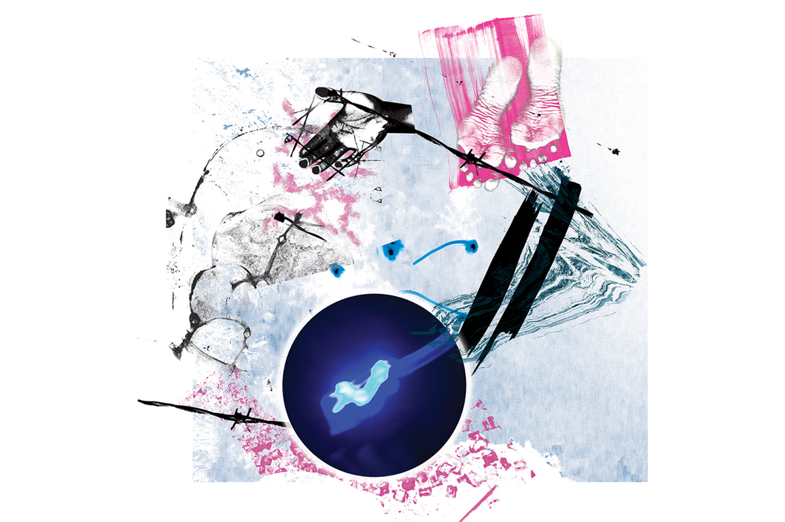
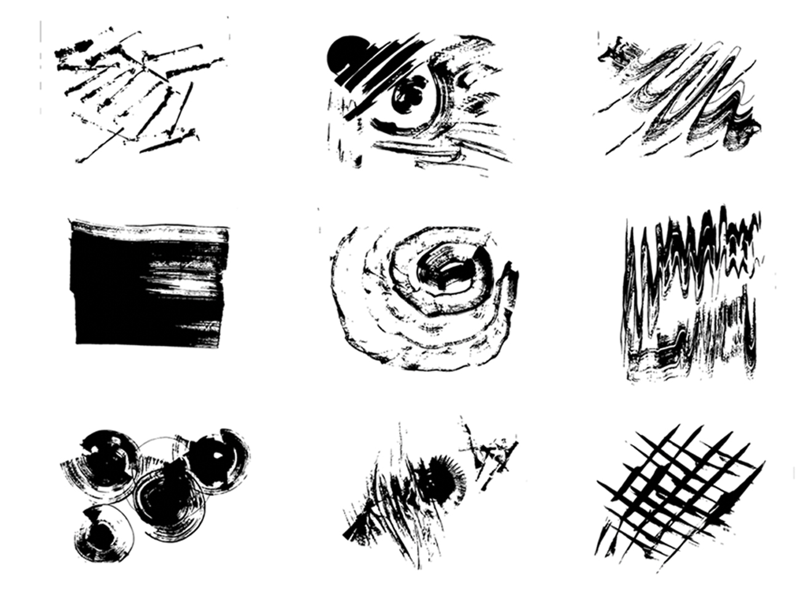
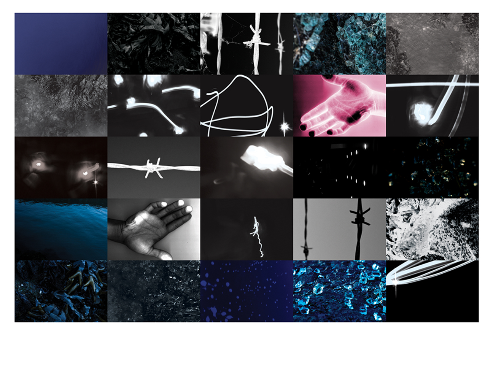

Biolumina
This project uses sound as a means to a visual language. The end result is a 12’x12’ inch dynamic composition that hints at a narrative informed by sound.
In this composition I formulated the design language by listening to the band Little Glass Men’s song titled Biolumina.

By immersing myself to sound I was able to highlight some key descriptors to the song. The words sinister, eroded, and aquatic are used to build the topography of formmaking for this project. I was able to build visuals through tool breaking, collage, and photography.

In the process of creating, I repeatedly listened to the song and concentrated on letting the sound dictate the flow of movement in my mark making. I also allowed the song to navigate my photographic journey and ultimately inform the relationships of media within the composition.